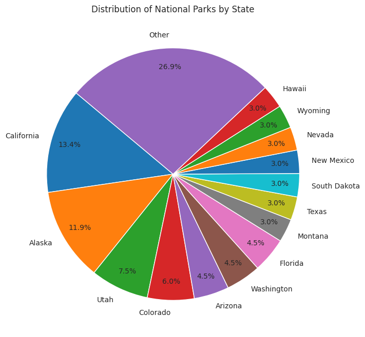

# Data cleaning/preprocessing# Primarily used for adding latitude and longitude coordinates necessary for future modelingdef find_lat_long(location): geolocator = Nominatim(user_agent="park_locator")try: location = geolocator.geocode(location, timeout=60)if location:return location.latitude, location.longitudeexceptExceptionas e:print(f"Unable to find latitude and longitude for {location}")returnNone, Nonenational_parks_df["Latitude"] = np.nannational_parks_df["Longitude"] = np.nanfor index, row in national_parks_df.iterrows(): location =f"{row['National Park']}, {row['State']}" latitude, longitude = find_lat_long(location) national_parks_df.at[index, "Latitude"] = latitude national_parks_df.at[index, "Longitude"] = longitude
Code
display(national_parks_df)
National Park
State
Latitude
Longitude
0
Denali National Park
Alaska
63.231662
-151.040555
1
Gates of the Arctic National Park
Alaska
67.750841
-153.247456
2
Glacier Bay National Park
Alaska
58.814175
-136.872094
3
Katmai National Park
Alaska
58.504984
-155.089623
4
Kenai Fjords National Park
Alaska
59.868563
-150.025771
...
...
...
...
...
62
North Cascades National Park
Washington
48.808348
-121.406215
63
Olympic National Park
Washington
47.786532
-123.536050
64
New River Gorge National Park
West Virginia
37.896731
-81.042973
65
Grand Teton National Park
Wyoming
43.810567
-110.648795
66
Yellowstone National Park
Wyoming
44.620089
-110.560689
67 rows × 4 columns
Code
# Convert and download CSV filenational_parks_df.to_csv('national_parks.csv', index=False)FileLink('national_parks.csv')
<class 'pandas.core.frame.DataFrame'>
RangeIndex: 67 entries, 0 to 66
Data columns (total 4 columns):
# Column Non-Null Count Dtype
--- ------ -------------- -----
0 National Park 67 non-null object
1 State 67 non-null object
2 Latitude 63 non-null float64
3 Longitude 63 non-null float64
dtypes: float64(2), object(2)
memory usage: 2.2+ KB
Code
park_counts = national_parks_df['State'].value_counts()threshold =2.9small_states = park_counts[park_counts / park_counts.sum() *100< threshold].indexpark_counts_filtered = park_counts.drop(small_states)others_count = park_counts.loc[small_states].sum()park_counts_filtered['Other'] = others_countplt.figure(figsize=(8, 8))sns.set_style("whitegrid")plt.pie(park_counts_filtered, labels=park_counts_filtered.index, autopct='%1.1f%%', startangle=140, pctdistance=0.85)plt.title('Distribution of National Parks by State')plt.show()

Code
state_counts = national_parks_df['State'].value_counts()top_5_states = state_counts.head(5)plt.figure(figsize=(6,6))sns.set_style("whitegrid")sns.barplot(x=top_5_states.values, y=top_5_states.index)plt.title('Top 5 States with the Most National Parks')plt.xlabel('Number of National Parks')plt.ylabel('State')plt.show()
_files/figure-html/cell-10-output-1.png)